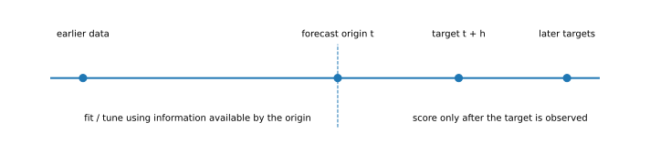
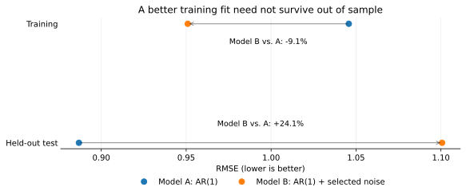

Out-of-Sample Forecast Evaluation
Can a model predict outcomes that were unavailable when the forecast was made?
QM001 · Forecast Evaluation · Foundation
Core idea. Judge a forecasting procedure only on targets that were still unknown when each forecast was produced.
Use it for. Comparing predictive performance under the information that would actually have been available when each forecast was made.
It does not establish. Statistical significance, causal validity, economic value, or future performance outside the evaluated historical setting.
The Question
A forecasting model can fit historical data very well and still fail when it meets new observations. The basic evaluation question is therefore simple:
Can the forecasting procedure predict a target that was unavailable when the forecast was produced?
For a clean out-of-sample assessment, the procedure used at forecast origin \(t\)—including any data-dependent preprocessing, tuning, or model selection that is part of that procedure—must use only information available at that origin under the stated data-availability assumptions. The evaluated target \(y_{t+h}\) must still be unknown when the forecast is made. Such evaluations are commonly organized around forecast origins, horizons, estimation samples, and evaluation periods (Tashman 2000).
Why It Matters
Financial and economic forecasting makes it easy to adapt a model to a particular historical sample. A researcher can vary predictors, transformations, lags, model families, hyperparameters, sample dates, missing-data rules, and ensemble weights. If later outcomes influence those choices and the same outcomes are then reported as a test of predictive performance, the evaluation is no longer independent of the development process.
Out-of-sample evaluation does not eliminate model uncertainty or research-selection risk. It does enforce one clear information rule: each reported forecast must be generated without access to its target or to other information that would not have been available at that forecast origin.
Out-of-sample is a property of the forecasting pipeline, not just the final regression fit.
Preprocessing, feature selection, hyperparameter tuning, model selection, and ensemble construction can all introduce future information if their data-dependent components are estimated using observations that are unavailable at the forecast origin.
Intuition: Reconstruct the Information Set
The most useful way to think about out-of-sample forecasting is to place yourself at a historical forecast origin and ask: what could I actually have known at that moment?

Suppose the goal is to forecast a variable \(h\) periods ahead. At origin \(t\), let \(\mathcal{I}_t\) denote the information set available to the forecaster. The forecast is
\[ \hat{y}_{t+h\mid t}=f_t(\mathcal{I}_t), \]
where \(f_t\) represents the full forecasting procedure used at origin \(t\). Once the target is observed, the forecast error is
\[ e_{t+h\mid t}=y_{t+h}-\hat{y}_{t+h\mid t}. \]
Across \(P\) evaluated forecasts, common point-forecast summaries include
\[ \mathrm{RMSE}=\sqrt{\frac{1}{P}\sum_{i=1}^{P} e_i^2} \]
and
\[ \mathrm{MAE}=\frac{1}{P}\sum_{i=1}^{P}|e_i|. \]
The loss function should match the forecasting or decision problem. Squared error penalizes large misses more heavily than absolute error. Probabilistic forecasts should be evaluated with scoring rules designed for predictive distributions rather than only with point-forecast errors (Gneiting and Raftery 2007).
Two Common Ways to Generate Out-of-Sample Forecasts
Single forecast origin
Choose one historical cutoff, estimate the forecasting procedure using information available by that date, and generate one or more forecasts from that origin. This is conceptually clean because the information cutoff is fixed.
Its limitation is that the conclusion may depend heavily on one historical origin or one subsequent episode. A single origin also says little about how the procedure behaves when it is repeatedly updated through time.
Repeated or rolling forecast origins
Move the forecast origin forward through the evaluation period. At each origin, generate a forecast using only information available by that date. Parameters may be re-estimated as new observations arrive, or they may remain fixed if that is the pre-specified forecasting protocol.
A repeated-origin design therefore comes closer to how forecasts are updated in practice. The estimation sample can itself be fixed-length or expanding; that separate design choice is treated in QM002 — Rolling vs Expanding Windows.
A held-out test block can use either approach. What matters is that the protocol is defined before inspecting the test outcomes and that every forecast respects its own historical information cutoff.
Pseudo-Out-of-Sample Is Not Automatically Real-Time
A chronological evaluation can still use information that was not actually available historically.
Macroeconomic series, for example, are often revised after their initial release. A researcher can take today’s revised database, impose historical cutoffs, and produce forecasts that are chronologically out of sample. That is a pseudo-out-of-sample exercise, but it is not necessarily a genuine real-time exercise because the historical values may contain later revisions. Real-time evaluation requires attention to the data vintage and release availability that would have been known at the historical origin (Stark and Croushore 2002).
The same principle extends beyond macroeconomic data. Point-in-time index membership, delisting information, corporate fundamentals, revised accounting fields, and backfilled vendor histories can all create a gap between a chronological backtest and the information set that was truly available.
Development, Validation, and Final Testing
The words validation and test are often used loosely, but their roles are different.
A validation sample may legitimately influence hyperparameters, feature choices, or model selection. Once that happens, however, it is part of model development and should not also be described as an untouched final test. A final test is most informative when its outcomes have not been used to choose the procedure whose performance is being reported.
In repeated-origin forecasting, earlier evaluation-period observations may later become admissible inputs for later forecast origins after those observations have actually occurred. That is not leakage. Leakage occurs when information enters a forecast before it would have been available at that forecast origin, or when final test outcomes are used after the fact to redesign the procedure and those same outcomes are still presented as untouched evidence.
What Must Stay Outside the Forecast’s Information Set
At each forecast origin, future observations must not influence any data-dependent step that is supposed to have been completed by that point. Depending on the application, this can include:
- estimated normalization or transformation parameters;
- missing-data imputation models fitted from the data;
- feature selection and dimensionality reduction;
- hyperparameter tuning and early stopping;
- model-family selection;
- ensemble weights;
- threshold or trading-rule calibration; and
- benchmark or sample definitions chosen after inspecting the evaluation result.
Predetermined transformations do not become invalid merely because they are applied later in time. The concern is whether their choice or fitted parameters use inadmissible future information.
One common approach is to keep tuning and selection inside the development data, then evaluate the chosen procedure on later observations. In a repeated-origin design, tuning can also be repeated within each origin using only information available up to that origin.
Worked Illustration
The example below is deliberately synthetic. It demonstrates how a search procedure can improve development-sample fit without improving later predictive performance. It is not evidence about any market, asset class, or forecasting model, and the single deterministic draw is not used to make a frequency claim about how often such reversals occur.
We simulate an autoregressive process. Model A uses the relevant lag of the target. Model B starts with the same lag, searches across 80 pure-noise candidate predictors using only the training sample, and keeps the candidate with the largest absolute correlation with Model A’s training residuals. The selected predictor has no true predictive role; it looks useful because the development procedure searched many irrelevant candidates.
The final 60 targets are excluded from model selection and coefficient estimation. During the held-out period, coefficients and the selected predictor remain fixed. Each one-step-ahead forecast may still use the lagged target and lagged candidate value that would already have been observed by that forecast origin.
| Sample | Model A: AR(1) RMSE | Model B: AR(1) + selected noise RMSE | Model B vs. A |
|---|---|---|---|
| Training | 1.046 | 0.951 | -9.1% |
| Held-out test | 0.887 | 1.101 | +24.1% |
Model B fits the development observations better because the search procedure finds a chance relationship. On the held-out targets, that apparent advantage disappears and reverses.

The lesson is not that simpler models always win. It is that model flexibility creates more opportunities to fit sample-specific noise, so performance on held-out targets answers a different question from fit on the development sample.
The numerical illustration can be reproduced from the accompanying data and code. The Reproducibility section below summarizes the materials available to readers.
Hands-on Lab: Reproduce the Reversal
This optional lab takes about 10–15 minutes. It uses the same synthetic data as the worked illustration, but the code is organized for a reader who wants to follow the logic step by step rather than work through the full replication code.
In this example, the development sample is the training block reported in the table above. By the end, you will have reproduced four steps in the example:
- split the observations into development and held-out samples;
- fit the AR(1) benchmark using development data only;
- search the 80 noise predictors using only the development sample and fit Model B with the selected predictor; and
- compare training and held-out RMSE without using the held-out targets for model selection.
Run it yourself. Start with the lab guide. For the easiest setup, download the complete lab bundle. Direct source: Python · R
The baseline run reproduces the values in the article. After that, try reducing the number of candidate predictors searched, for example with --n-search 20 in the Python lab or 20 as the final command-line argument in the R lab. Do not expect the result to move in one direction as you change the search size. The point of the exercise is to see how model search and held-out evaluation answer different questions.
Implementation Pattern
A repeated-origin evaluation that respects the information boundary can be summarized with the following Python-like pseudocode. The functions are schematic rather than a runnable API; the purpose is to make the information boundary explicit.
for origin in forecast_origins:
train = data_available_by(origin)
# Every data-dependent operation is estimated with admissible information only.
preprocessing = fit_preprocessing(train)
hyperparameters = tune_model(train, preprocessing)
model = fit_model(train, preprocessing, hyperparameters)
forecast = model.predict(features_available_at(origin), horizon=h)
store(origin=origin, target=origin + h, forecast=forecast)
# Evaluate each stored forecast only against the target that later became observable.
score(stored_forecasts, realized_targets)The exact implementation differs by model, but the core rule stays the same: for every forecast, record the origin, the target, what information was available, and which data-dependent steps were estimated from that information.
How to Interpret the Result
Lower out-of-sample loss means a model performed better under the specified target, horizon, sample, data-availability assumptions, and loss function. That statement is useful, but narrower than it may first appear.
A lower RMSE does not by itself establish statistical significance, economic materiality, stability through time, superiority under another loss function, or robustness to another benchmark. Statistical comparison of two forecast sequences is a separate inferential problem; the Diebold–Mariano framework is one widely used approach (Diebold and Mariano 1995), while conditional predictive-ability methods address a different comparison question (Giacomini and White 2006).
Likewise, one evaluation period may be dominated by a recession, crisis, policy regime, or other unusual episode. A strong out-of-sample result is therefore evidence from a specific historical evaluation, not proof that the model is universally superior.
Common Mistakes
1. Standardizing with the full sample
Estimating a mean, variance, or another data-dependent scaling parameter from the full dataset lets later observations influence earlier transformed inputs. Fit such parameters on the admissible training information and apply the fitted transformation forward. The numerical effect can be small or even neutral for some model classes, but the historical information boundary should still be respected.
2. Tuning on the final test period
If test performance is inspected, the model is changed in response, and the same test period is checked again, that period has become part of model development. At that point, a clean final assessment requires either a new untouched test period or an explicit acknowledgment that the existing test result is exploratory.
3. Treating a chronological split as genuine real-time data
A date cutoff does not remove revisions, backfills, or release-timing problems. The information set must be defined, not assumed.
4. Misaligning origin and target
For an \(h\)-step forecast, the relevant information cutoff is the forecast origin \(t\), not the target date \(t+h\). When features are constructed for a direct \(h\)-step forecast, a misaligned lag can accidentally use information that would not have been available at origin \(t\).
5. Letting preprocessing see the future
PCA, fitted imputation, feature selection, volatility estimates, risk estimates, and ensemble weights can all be part of the forecasting rule. If their data-dependent parameters are estimated with inadmissible future observations, the evaluation is no longer cleanly out of sample.
6. Equating the lowest RMSE with a unique winner
Average loss ranking is descriptive. Sampling uncertainty, serial dependence, multiplicity, benchmark choice, and temporal instability require additional analysis when the claim goes beyond simple ranking.
What Out-of-Sample Evaluation Does Not Prove
Out-of-sample evaluation is essential when the research question is predictive, but it does not automatically establish:
- causal or structural validity;
- profitability after trading costs and implementation constraints;
- stability across regimes or markets;
- statistical distinguishability from competing forecasts;
- immunity to data-snooping across repeated research iterations; or
- future performance outside the historical environments represented in the evaluation sample.
The method is best viewed as a disciplined answer to one question: how did a forecasting procedure perform when each forecast had to be made without access to its future target?
Practical Checklist
Before describing a result as out of sample, verify that:
- the forecast origin and target horizon are explicit;
- every input was actually available at the forecast origin under the stated design;
- data-dependent preprocessing was fitted without inadmissible future information;
- model and hyperparameter selection did not use outcomes later presented as an untouched final test;
- any use of earlier evaluation-period observations at later origins follows the chronology and the pre-specified protocol;
- the loss function was defined and computed consistently across models;
- competing models were scored on comparable target observations; and
- claims about significance, stability, or economic value are supported by separate evidence.
Used in SlackQuant Research
Beyond Average Accuracy: Statistical Distinguishability and Temporal Concentration in Data-Rich Macroeconomic Forecasting uses a fixed-length rolling pseudo-out-of-sample exercise built from a dated FRED-MD vintage. QM001 explains the information-set logic and general evaluation framework; the research paper contains the application-specific design, statistical comparisons, and evidence.
Reproducibility
The accompanying materials include the synthetic data, code, and figures used in the worked example, plus a hands-on lab in Python and R. Re-running the example with the stated data and analysis choices reproduces the reported training and held-out comparisons.